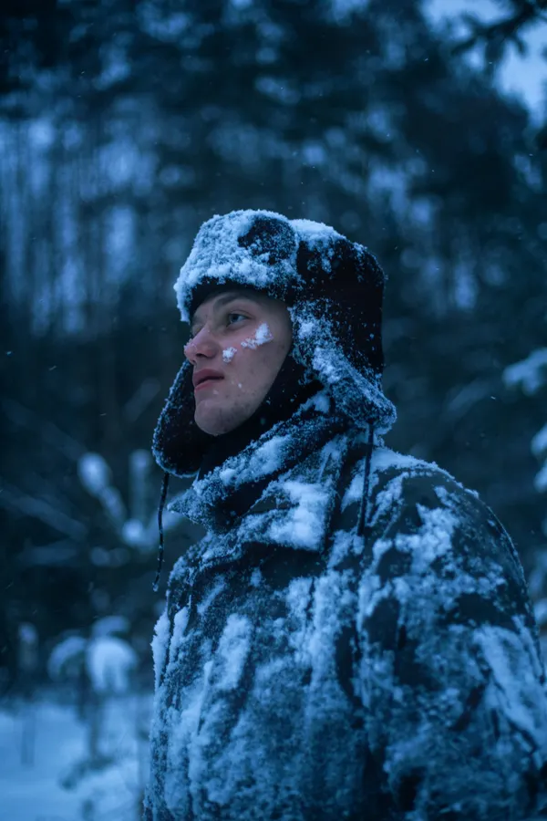
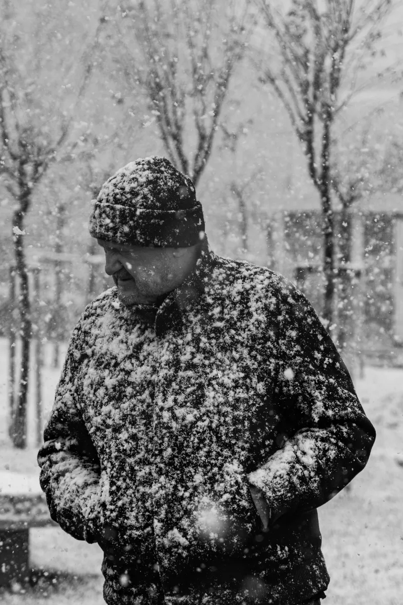
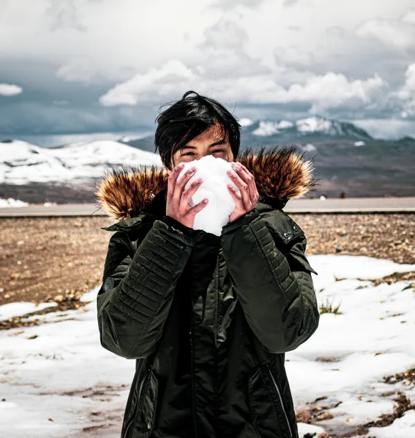

Winter Clothing / Parkas
The Best Winter Parkas for Canada

Illustrative photo (Pexels) — not the actual jacket. The real jackets are at the retailer links in each pick section below.
A Canadian winter does not ask what jacket you like. It asks whether you stay warm standing for the bus at −25, walking the dog through wet snow, or working outside long after the wind picks up — and the wrong parka answers that question fast.
This guide does not pretend to have tested these jackets. We checked the brands' published specifications, read user and professional reviews — good and bad — and verified Canadian retailer pages and prices, all dated November 4, 2026. Where a brand does not publish a figure, we say so instead of guessing.
Our top pick is the Mountain Warehouse Antarctic Extreme — the strongest deep-cold claim we could verify at a budget price, lab tested to −40°C.
Everything we recommend
This guide covers Mountain Warehouse and Columbia only, as of now. Prices as listed or checked November 4, 2026. Mountain Warehouse prices are sale prices (Antarctic was $539.99, Concord was $379.99) and can rise when the sale ends.
top pick
Best for deep cold on a budget
Mountain Warehouse Antarctic Extreme Waterproof Down Jacket
$319.99 at Mountain Warehouse Canada →
Illustrative photo (Pexels) — not the actual jacket.

budget pick
Mountain Warehouse Concord Extreme Down Long Jacket
$189.99 at Mountain Warehouse Canada →
Illustrative photo (Pexels) — not the actual jacket.

best value everyday
Columbia Marquam Peak Fusion II Hooded Parka (Men's)
$299.99 at Ernie's Sports Experts →
Illustrative photo (Pexels) — not the actual jacket.
Why you should trust this guide
We do not test jackets ourselves, and we say so. No lab, no field tests, no test scores from us. We read the brands' published specifications and lab claims, read professional and user reviews — good and bad — and check real Canadian retailer pages and prices, dated. We take no money from manufacturers for reviews, and we publish no reviewer persona: the author is Winter Clothing Canada, not an invented expert. Brand temperature ratings are brand claims, not a shared standard — Mountain Warehouse's −40°C figures are its own laboratory tests, stated as such on its product pages. Prices shift with size, colour and sales; the retailer's page is always the final word.
Who this is for
Canadians buying a winter parka under $600 — deep cold on a budget, everyday city winter, or long coverage each get their own pick. This is not a mountaineering guide, not a ski guide (for skiing, see the Phase Extreme in Other worth considering), and not a premium-parka guide — parkas near $2,000 are listed under The competition so you can see what was left out and why.
How we picked
Warmth claims we could check, weather protection, Canadian availability and CAD price with a verified retailer page, fit for the job (deep cold, everyday city winter, and long coverage each get their own pick), and honest flaws — a pick with no stated downside was not trusted. Where a brand does not publish a figure, the table says "not published" — we do not fill gaps with guesses.
How we make money
Picks come first; links come after. Right now this page has no affiliate links, so it earns nothing. When affiliate links are added, they will be clearly marked, we may earn a commission if you buy through one, and if you return a product we earn nothing on it. We take no money from manufacturers for reviews, and linking a retailer that pays no commission is still done when it is the best buying option.
Spec comparison — checked November 4, 2026
| Antarctic Extreme | Concord Extreme | Marquam Peak Fusion II | |
|---|---|---|---|
| Price | $319.99 sale (was $539.99), Mountain Warehouse Canada | $189.99 sale (was $379.99), Mountain Warehouse Canada | $299.99, Ernie's Sports Experts |
| Temperature claim | −40°C, Mountain Warehouse lab test | −40°C, Mountain Warehouse lab test | Not published — Columbia rates it "Maximum Warmth" only |
| Fill | 600 fill-power RDS down; 75% grey duck down, 25% feather | 600 fill-power down; 75% down | 100% recycled polyester Thermarator synthetic; fill weight not published |
| Waterproofing | 5,000mm, taped seams (moderate rain) | 5,000mm, taped seams | Water-repellent Omni-Shield; no millimetre rating published |
| Breathability | 5,000g | 5,000g (Canada listing) | Not published |
| Weight | Not published | Not published | Not published |
| Hood | Fur-trim | Detachable, adjustable | Removable, adjustable, with removable fur trim |
| Cut | Standard jacket | Long cut | Regular fit; 33.0 in / 83.8 cm back length |
| Size range | Not published on the Mountain Warehouse Canada page | Not published on the Mountain Warehouse Canada page | S–XXL (Columbia) |
| Warranty | Not published on the product page | 3 years, confirmed | Columbia limited lifetime — manufacturer defects only |
| Care | Cold delicate wash, down-specific cleaner, tumble dry low with dryer balls, never air dry | Same down-wash method as the Antarctic | Machine wash, no bleach, tumble dry, no iron, no dry clean; fur trim machine wash, dry flat |
| Other | Inner storm cuffs, RDS certified, PFC-free | Downproof lining | Omni-Heat Infinity reflective lining |
Not published means the brand or retailer does not publish that figure on its product page. Mountain Warehouse Canada's returns window could not be verified from its own pages, so no returns figure is stated here — check the retailer page before ordering. Prices vary by size and colour; the retailer's page is the final word.
Size and cut, compared
Concord is the long one — its cut covers the tops of your legs and reviewers say it is roomy enough for layers underneath. Antarctic is the standard jacket of the three. Marquam is a regular fit with a 33.0 in / 83.8 cm back length and a removable, adjustable hood with removable fur trim. One honest gap: Mountain Warehouse Canada does not publish a size range for either Mountain Warehouse jacket on its product page, so no MW size range is stated here; Marquam is S–XXL per Columbia. Fit notes in the pick sections are second-hand review themes, not our measurements.
Top pick: Mountain Warehouse Antarctic Extreme Waterproof Down Jacket
Illustrative photo (Pexels) — not the actual jacket. See the real jacket at the retailer link below.
$319.99 at Mountain Warehouse Canada
Price checked November 4, 2026.
Lab tested to: −40°C · Fill: 600 fill-power RDS down, 75% grey duck down / 25% feather · Waterproofing: 5,000mm, taped seams · Breathability: 5,000g · Hood: fur-trim · Cuffs: inner storm cuffs · Warranty: not published on the product page
Why we like it. The strongest deep-cold claim in this guide that we could verify on the brand's own page — laboratory tested to −40°C, 600 fill-power RDS down, fully waterproof and breathable with taped seams, a fur-trim hood, and inner storm cuffs. Free standard Canada delivery on orders over $120.
Warmth
The −40°C figure is Mountain Warehouse's own laboratory test, and 600 fill-power down is the warmth-to-weight story: strong insulation without the bulk of a heavier jacket. Treat the figure as a lab result, not a promise — activity level, wind, moisture, and layering change how warm any jacket feels.
Hood, cuffs, and weather protection
The fur-trim hood and inner storm cuffs are the cold-weather details that matter when wind finds its way in, and taped seams back the 5,000mm waterproof rating. That rating is Mountain Warehouse's moderate-rain level, and the jacket is RDS certified and PFC-free.
Fit and layering
Review themes (second-hand, not our testing): on Mountain Warehouse's own site (4.8 from 493 reviews, AU listing), the dominant notes are very warm, excellent value for a down parka, and genuinely waterproof and windproof. One detailed reviewer wore it in Scandinavia at −20°C with only a base layer underneath and stayed warm in biting wind, blizzard, and pouring rain. On sizing, reports are hit-and-miss: one buyer found Medium roomy with a hood far too big, then found Small too narrow in the shoulders with short sleeves.
Care and warranty
Mountain Warehouse's own down-washing guide: brush off dirt, close zips, wash cold on a delicate cycle with a down-specific cleaner (never household detergent or softener), never use a top-loader with a centre agitator, and tumble dry on low heat with dryer balls — never air dry, which risks clumping and smell. Re-proof when dirty or at least every six months to retain waterproofing. No warranty line appears on the Antarctic product page, so none is stated here.
Flaws but not dealbreakers
Not the pick if you run hot or work hard outdoors. Reviewers report it is instantly too warm indoors and sweaty for strenuous activity like shovelling snow. Not the pick if you need a certain fit without trying it on. Sizing reports are inconsistent — Medium roomy with a big hood, Small narrow in the shoulders. Not the pick for prolonged heavy rain. Its 5,000mm rating is Mountain Warehouse's moderate-rain rating. One isolated reviewer report: a zip breaking within the first weeks. That is a single report against hundreds of positive reviews, not a pattern we can confirm.
Budget pick: Mountain Warehouse Concord Extreme Down Long Jacket
Illustrative photo (Pexels) — not the actual jacket. See the real jacket at the retailer link below.
$189.99 at Mountain Warehouse Canada
Price checked November 4, 2026.
Lab tested to: −40°C · Fill: 600 fill-power down, 75% down · Waterproofing: 5,000mm, taped seams · Hood: detachable, adjustable · Warranty: 3 years · Size range: not published on the Mountain Warehouse Canada page
Why we like it. The same −40°C lab testing and 600 fill-power down as the Antarctic, in a longer cut, with a detachable and adjustable hood, downproof lining, and a 3-year warranty — at the lowest price on this page.
Warmth
Same lab-tested −40°C claim and 600 fill-power down as the top pick, so the warmth story is the same on paper — with the same caveat that a lab figure is not a promise in wind, wet, and still air.
Length and coverage
The long cut is the point of this jacket: it covers the tops of your legs, and reviewers say it is roomy enough for layers underneath. A hidden inside pocket is reachable without opening the zip, and the downproof lining keeps fill where it belongs.
Fit and layering
Review themes (second-hand, not our testing): on Mountain Warehouse's own site (4.8 from 221 reviews, UK listing), praise centres on warmth, quality, and the warranty on zipper and seams. On Desertcart (4.5 from 157 reviews), themes include rain beading and rolling off with no penetration, super warm without overheating in milder cold, and fairly lightweight for a down jacket. On fit, some buyers find it runs slightly big, while others report a good fit for tall people across chest, shoulders, and midsection.
Care and warranty
Same down-wash method as the Antarctic: cold delicate wash with a down-specific cleaner, tumble dry low with dryer balls, never air dry, and re-proof when dirty or at least every six months. The 3-year warranty is confirmed on both the Mountain Warehouse Canada and UK product pages.
Flaws but not dealbreakers
Not the pick if you want a short jacket. The long cut covers the tops of your legs — that is the point of it, and the reason to skip it if you want a waist-length jacket. Not the pick if you stand still in deep cold. One reviewer noted the −40°C figure reflects active use, not standing still. Not the pick if sizing certainty matters. Fit reports are inconsistent — slightly big for some buyers, a good tall fit for others — and Mountain Warehouse Canada does not publish a size range for it. One isolated note questioned waterproofing and called quality average, against the majority praise for rain beading and warmth.
Best value everyday: Columbia Marquam Peak Fusion II Hooded Parka (Men's)
Illustrative photo (Pexels) — not the actual jacket. See the real jacket at the retailer link below.
$299.99 at Ernie's Sports Experts
Price checked November 4, 2026.
Insulation: 100% recycled polyester Thermarator synthetic, Omni-Heat Infinity reflective lining · Waterproofing: water-repellent Omni-Shield, no millimetre rating published · Cut: regular fit, 33.0 in / 83.8 cm back length · Sizes: S–XXL · Warranty: Columbia limited lifetime, manufacturer defects only · Temperature rating: not published — Columbia rates it "Maximum Warmth" only
Why we like it. A synthetic-insulated everyday parka with a hooded, longer silhouette at a mid price — and synthetic fill is easier to care for than down and keeps warming when wet. The reflective lining and removable, adjustable hood with removable fur trim are the details that set it apart from a plain everyday parka.
Warmth
Columbia publishes no °C figure for this parka — only "Maximum Warmth" with "Everyday" as best use — so it cannot be compared on temperature against the −40°C lab-tested Mountain Warehouse picks. Review themes are split: Marks & Spencer user reviews (29 reviews, 62% recommend) praise warmth with roomy pockets and holding up in extreme wind chill, including one reviewer warm through a second season of snow-blowing — but several reviewers found it less warm than it looks, one feeling cold across the upper back and shoulders at a −27°C wind-chill feel despite the reflective lining, and another calling it heavy but no warmer than a much lighter down jacket.
Pockets and features
A zippered chest pocket and dual-entry zippered hand pockets, a drawcord-adjustable hem, adjustable cuffs, and a removable, adjustable hood with removable fur trim. A Backcountry Gearhead expert note calls it warm without being overly bulky, with the reflective lining genuinely boosting heat retention and insulation holding up in damp weather — retailer expert copy, not an independent test.
Fit and layering
Regular fit with a 33.0 in / 83.8 cm back length, in sizes S–XXL per Columbia. Reviewers describe roomy pockets and a comfortable everyday fit, but warmth reports vary enough that layering underneath matters more here than with the down picks — a warm base layer is the safe move for long stretches outside.
Care and warranty
Columbia's own page: machine wash, do not bleach, tumble dry, do not iron, do not dry clean. Faux fur trim: machine wash, do not bleach, dry flat. Columbia's limited lifetime warranty covers manufacturer defects in materials and workmanship for the practical lifetime of the product — not wear and tear, misuse, or fading — with repair or merchandise credit at Columbia's discretion.
Flaws but not dealbreakers
Not the pick if you need a published temperature rating. Columbia publishes no °C figure for it — only "Maximum Warmth" — so you cannot compare it on temperature against the −40°C lab-tested Mountain Warehouse picks. Not the pick for long inactive stretches in extreme cold. Reviewers are split on warmth: some found it less warm than it looks, including cold across the upper back and shoulders at a −27°C wind-chill feel. Not the pick if you need a millimetre waterproof rating. It is water-repellent only, with no published mm figure — for wet-weather priority, the Mountain Warehouse picks publish 5,000mm. One isolated reviewer report: a pocket zipper breaking after a few weeks.
Other worth considering
Mountain Warehouse Phase Extreme Ski Jacket ($259.99) — if you ski. A waterproof ski jacket with taped seams, a detachable snowskirt and a hood. Not a pick here because it is built for skiing, not daily winter wear. Mountain Warehouse Zenith Extreme 3-in-1 Jacket ($175.99) — if you want versatility. A waterproof outer with a detachable insulated inner jacket. Not a pick here because neither layer matches the −40°C lab-tested warmth of the picks above. Both prices as listed on Mountain Warehouse Canada, November 4, 2026.
The competition
These are the jackets a reader might expect here, and why each is not a pick. None of these judgments comes from testing — they come from price, role, or scope. Prices as listed or checked November 4, 2026.
Canada Goose Expedition Parka (~$1,995) — not picked. A premium price far outside this guide's under-$600 budget scope, so it was not evaluated here.
Arc'teryx Therme Parka ($1,100 at Sporting Life; $744.37 at evo) — not picked. Premium pricing, outside this guide's budget scope, so it was not evaluated here.
The North Face McMurdo Parka ($539.99 at Ernie's) — not picked. Within budget, but not evaluated: this guide currently covers Mountain Warehouse and Columbia only.
Decathlon Forclaz Trek 1000 (~$400, via The Shopping Lens) — not picked. Not evaluated here; outside the guide's current two-brand scope.
Mountain Warehouse Brisk Extreme ($119.99, Mountain Warehouse Canada listing seen) — not picked. Not evaluated here, and no deep-cold claim was verified for it in this guide.
Mountain Warehouse Tundra Extreme Shell ($279.99, listed as a shell, thermal rated −30°C) — not picked. A shell, not an insulated parka — a different job, so it is not a pick here.
What to look forward to
Price changes on all three picks, new Mountain Warehouse and Columbia models for this winter, and other brands — added only after the same verification. Nothing here is a promise about what comes next.
What to know before you buy
Sweaters. Wool, especially merino, is the warmest common sweater material because it insulates even when damp. Fleece is lighter and dries faster but is less warm for its weight. Cotton is the winter mistake — it loses warmth when wet and dries slowly. A sweater is a midlayer: base layer underneath, parka on top.
Down vs synthetic. Down is warmer for its weight and packs smaller, but loses over 90% of its insulation when saturated. Synthetic is heavier and less warm per gram, but retains warmth when wet and dries faster. Fill power (550–900 cubic inches per ounce) measures warmth-to-weight, not warmth alone. The 3-layer system. Moisture-wicking base, insulating midlayer, windproof and waterproof outer. At wind chill below −27, frostbite risk rises rapidly; at −28 to −39, exposed skin is at high risk within about 30 minutes (Environment and Climate Change Canada guidance).
Frequently asked questions
Which is better for deep cold, Mountain Warehouse or Columbia?
For deep cold on a budget, the Mountain Warehouse Antarctic Extreme is lab tested to −40°C and is the stronger deep-cold pick of the two brands. The Columbia Marquam Peak Fusion II is an everyday winter parka at a lower price, best for city winters rather than long exposure at −30°C.
What is the difference between the Mountain Warehouse Antarctic Extreme and Concord Extreme?
Both are lab tested to −40°C with 600 fill-power down. The Antarctic Extreme is a waterproof down jacket with a fur-trim hood, listed at $319.99 CAD. The Concord Extreme is a longer down jacket with a detachable hood and a 3-year warranty, listed at $189.99 CAD.
What is a good winter jacket under $600 in Canada?
Under $600, the Columbia Marquam Peak Fusion II at $299.99 at Ernie's Sports Experts and the Mountain Warehouse Antarctic Extreme at $319.99 and Concord Extreme at $189.99 at Mountain Warehouse Canada are strong budget picks. Add a warm base layer for long inactive stretches at −30°C.
What is the warmest sweater material for winter?
Wool, especially merino wool, is the warmest common sweater material because it insulates even when damp. Fleece is lighter and dries faster but is less warm for its weight. Cotton is the material to avoid in winter because it loses warmth when wet and dries slowly.
Is down or synthetic insulation better?
Down is warmer for its weight and packs smaller, but loses over 90% of its insulation when saturated with water. Synthetic insulation is heavier and less warm per gram, but retains warmth when wet and dries faster, so it is the safer choice for wet coastal winters and high-sweat activity.
Meet your guide
Winter Clothing Canada is a publication, not a person — there is no invented expert behind this guide. We research published specifications, reviews, and verified Canadian retailer listings, and we state plainly what we did not do: no hands-on testing, no lab, no scores of our own.
Further reading
Mountain Warehouse's own down-jacket washing guide · Columbia's limited lifetime warranty coverage · Spec comparison table · Frequently asked questions
Sources: Mountain Warehouse Canada product pages, Columbia product page, Ernie's Sports Experts product page, and Mountain Warehouse's own down-washing guide, checked November 4, 2026; review themes from Mountain Warehouse's own site, Marks & Spencer user reviews, Desertcart user reviews, and a Backcountry Gearhead expert note, all labelled second-hand on the page. The Shopping Lens, Warmest Parka for −30°C, published October 30, 2026, updated November 2, 2026. Updated November 4, 2026.